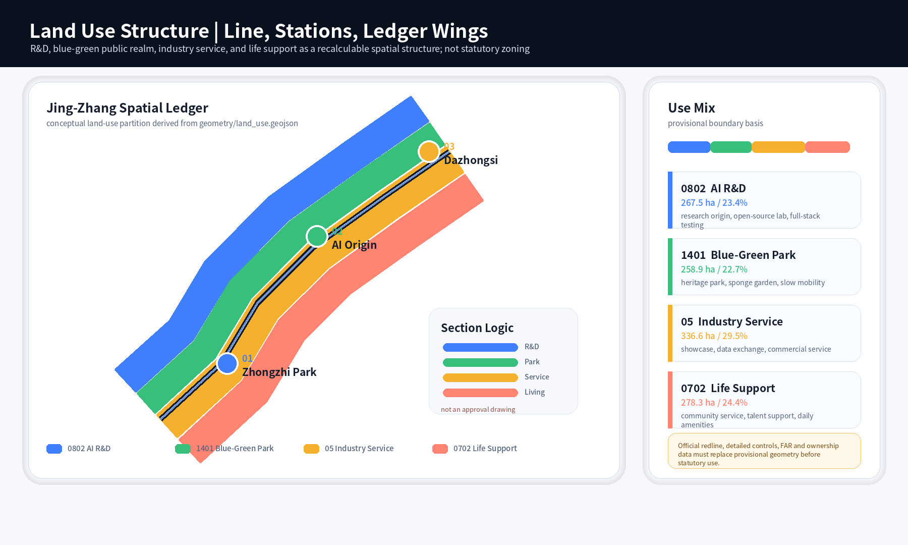
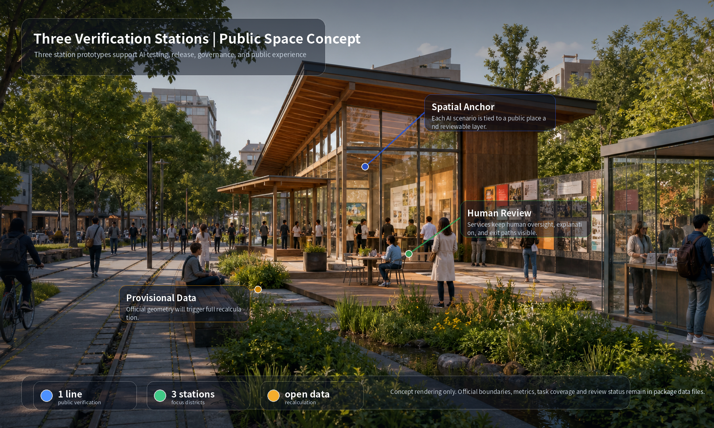
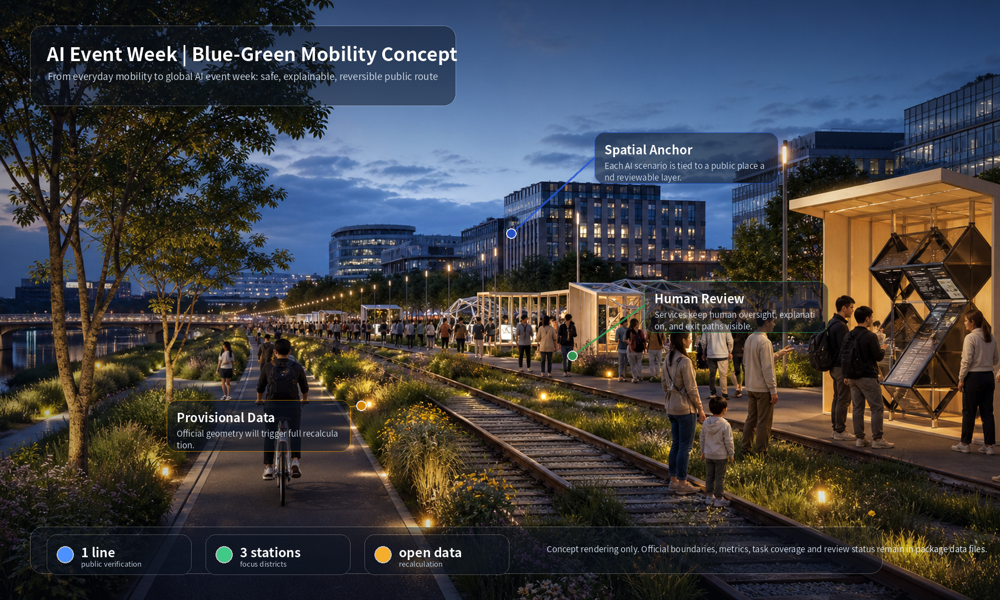
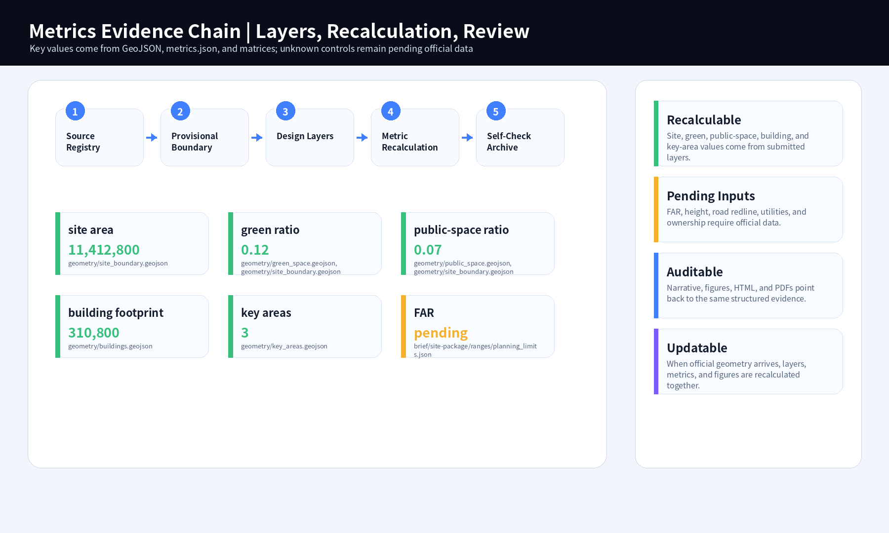

Metrics Evidence Chain
metrics.jsonVerification Stations
key_areas.geojsonFull-stack autonomy, safety governance, Qinghe low-carbon frontage
Near-campus conversion, open-source release, talent services
AI industry showcase, data-element salon, international demo gateway
Concept Overview
local assetLand Use Structure
local asset
Verification Stations
local asset
Blue-Green Mobility
local asset
Metrics Evidence Chain
local asset